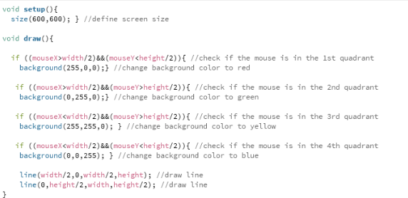
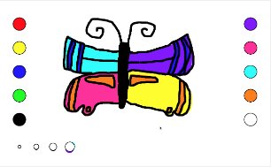
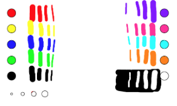

Week 1:
Introduction to Processing
In this week we were introduced to a software Processing. Since we were not so familiar with the software, Alice and I did small challenges for each other.
Alice challenged me to draw a sun. And I challenged her to draw a star.The images show how I completed the challenge
Useful resource:Processing Reference
Pong Game
After completing the challenge I decided to try to create a pong game. Whenever I needed to learn about a new funcion, I used the processing reference page or if I wasn't able to find exactly what I wanted I send an email to Mr.Zanchetta and he guided me through the solution.
I had a lot of trouble discovering how to write a function that says if something happens AND another thing happens, then do something. Mr.Zanchetta helped my by showing the write way to write the code:
if ((____) && (____)){
______;}
Something I am still not sure how to do is move the ball randomly through the screen. I could make the ball move but not randomly. The code I am using to make it move is:
if (touchedge==true){
circle X=circle X+3; }
if (touchedge==false){
circle X=circle X-3; }
Week 2:
2D shapes Overlapping
This week I started to try to find a new way to know when a circle is overlapping another. The idea consists in measuring the distance between both circles and checking if it is bigger, equal or smaller than the sum of both ratios.
If the distance is bigger, the object is not overlapping. If the distance is smaller or equal, the object is overlapping the other.
I am still trying to figure it out how to transform this in lines of code.
I was able to figure it out how to find the radius of a circle in processing. The radius is the circle's extent - the third information inside a circle funcion - divided by two.
float extent = 40;
float radius = extent/2;
circle(x, y, extent);
// the radius of this circle is 40/2 (20)
Challenge #1
Today's challenge was to make a code that depending in the mouse position, the color of the screen would change.
The picture shows my planningb> before start writing my code.
In the planing, I used numbers to determinate where the line would be. However, in my codes, I decided to change to the variables width and height so if for any reason I needed to change the size of the screen, the codes wouldn't change.
This is a video of my codes working
Week 3:
Paint?
I bet you’ve heard about Paint before, in case you didn’t, Paint is a microsoft app used for drawing. Today I decided to see if I could make my own paint.
This is a video of me explaining my codes.
These are some ✨ masterpieces ✨ made by my sister Giulia da Vinci in the first version. Her feedback was to add more colors, an eraser and a smaller brush “for making the outlines”.
Paint? Second Version
Unfortunately, Giulia was asleep when I finish the second version, but I did a test myself and I am very proud of my work. I will still make some improvements but I had a lot of fun coding this.
 Feedback:
"I was wondering if you could create a slider to choose the thickness of the lines, so the user could have a bigger range (not just the specified number, but all the numbers between them.)"
"Bi, I did not know the function to set the position where the processing window will be created in the computer =) Tks for teaching me that =)"
"It was really important your first text with a real user (Giulia) because the suggestions she gave to you improves the usability of your Paint tool. Great job of releasing a first version and improving it based on user's feedback."
"How could you give more freedom to the user choose his/her colours? Maybe a system where we, users, could select the amount of Red, Green and Blue ;)"
Paint? Planing
The new version will contain the colors in the left as default, it's already there if the user doesn't want to make their own colors.
The slider below the colors is for choosing the stroke weight. If you move to the left, the stroke weight is smaller and if you move to the right, is bigger.
In the right there is a RGB selector, you can click in the arrows to increase or decrease the amount of RGB. The circle next to it is for showing the current color.
I was able to make the RGB selector but one problem I'm having is: there is no limit, the numbers are passing 255.
I am struggling to figure out how to make a slider. I will do some research and try again.
Feedback:
“owwwwww, the design for the RGB buttons are really cool and allow the user know what is behind the colour system. It is useful, easy to use and also teaches people about how the RGB system works.”
“you can control that with the proper code. If the user continues clicking, IF the number is higher than 255, make the number stay at 255”
Week 4:
RoboHack
This week I took a break from making the paint tool because I was working on my project for RoboHack. I make a “website”/presentation in Processing to sell my product.
Here is the video of me explaining my codes.